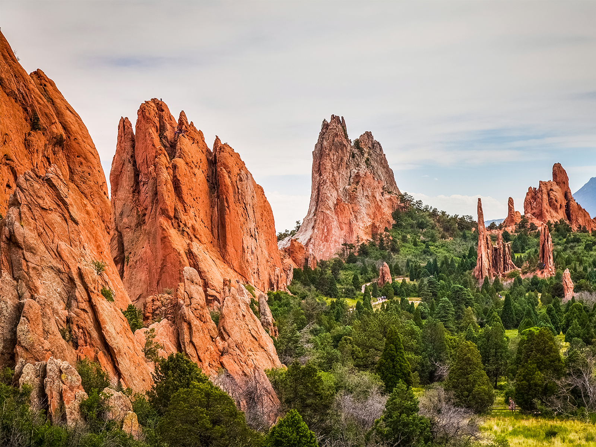

The Springs

Colorado springs
Colorado Springs, at an elevation of 6,035 ft., is a city in Colorado at the eastern foot of the Rocky Mountains. It lies near glacier-carved Pikes Peak, a landmark in Pike National Forest with hiking trails and a cog railway leading to its 14,114-ft. summit.
City Information
- Colorado Springs has a population of approximately 500,000.
- Colorado Springs was incorporated in 1871.
- Colorado Springs is located in the Pikes Peak region in central Colorado, situated to the south of Denver and also in the Front Range Urban Corridor.
- Colorado Springs is classified as an urban city with a mix of suburban areas. It is the second-largest city in Colorado.
- Colorado Springs’ median household income is around $75,000. This is slightly lower than the state median of approximately $77,000.
Air force Academy
Colorado Springs is renowned for being home to the United States Air Force Academy, a prestigious institution dedicated to training future leaders of the Air Force.